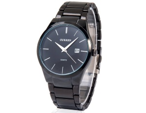

|
04.09.2016
Часы мужские золотые

В конце XIX века из-за неудобства использования в боевых критериях карманными часами, военные часы мужские золотые начали носить часы на запястье (т. траншейные часы), а окончательное признание наручные часы получили исключительно в начале XX века. В текущее время функции наручных часов перебежали к часы мужские золотые телефонам и смарт-часам, тогда как обычным наручным часы мужские золотые часам остались роли декорации и показателя общественного статуса (общественного маркера). Систематизация наручных часов[править | часы наручные электронные мужские править код] Традиционные — имеют серьезный дизайн, в большинстве случаев не снабжаются лишними функциями. Сложные часы — часы, имеющие часы мужские золотые дополнительные функции-усложнения. Спортивные часы — часы для эксплуатации в томных критериях. При изготовлении употребляют особо часы мужские золотые крепкие материалы и прокладки для защиты от воды. Хронометры — часы завышенной точности и стабильности хода. Часовой механизм и секундомер работают независимо друг от друга. Ювелирные часы — предмет роскоши, один из видов дизайнерских часов. Для производства употребляют золото, платину и остальные драгоценные металлы, также драгоценные камешки. Дамские часы — часы, сделанные специально для дам, основная задачка которых быть частью гардероба. В дамских часах краса важнее, чем функциональность и надежность. — устройство, носимый на часы мужские золотые запястье и служащий для индикации текущего времени и измерения временны? Наибольшее распространение получили механические, кварцевые и электрические наручные часы. 1-ые наручные часы были сделаны сначала XIX века для Евгения Богарне,[источник не указан 2965 дней] но в то время мысль не была часы мужские золотые оценена по достоинству. В конце XIX века из-за неудобства использования в боевых критериях карманными часами, военные часы мужские золотые начали носить часы на запястье (т. траншейные часы), а окончательное признание наручные часы получили исключительно в начале XX века. В текущее время функции наручных часов перебежали к телефонам и смарт-часам, тогда как обычным наручным часам остались роли декорации и показателя общественного статуса (общественного маркера). Систематизация наручных часов[править | править код] часы мужские золотые Традиционные — имеют серьезный дизайн, в большинстве случаев не снабжаются лишними функциями. Сложные часы — часы, имеющие дополнительные функции-усложнения. Спортивные часы — часы для эксплуатации в томных критериях. При изготовлении употребляют особо крепкие часы мужские золотые материалы и прокладки для защиты от воды. Хронометры — часы мужские золотые часы завышенной точности и стабильности хода. Часовой механизм и часы мужские золотые секундомер работают независимо друг от друга. Ювелирные часы — предмет роскоши, один из видов дизайнерских часов. Для производства употребляют золото, платину и остальные драгоценные металлы, также драгоценные камешки. Дамские часы — часы, часы мужские золотые сделанные специально для дам, основная задачка которых быть частью гардероба. В дамских часах краса важнее, чем функциональность и надежность. — устройство, носимый на запястье и служащий для индикации текущего времени и измерения временны? Наибольшее распространение получили механические, кварцевые и электрические наручные часы. 1-ые наручные часы были сделаны сначала XIX века для Евгения Богарне,часы мужские золотые [источник не указан 2965 дней] но в то время мысль не была часы мужские золотые оценена по достоинству. В конце XIX века из-за часы мужские золотые неудобства использования в боевых критериях карманными часами, военные часы мужские золотые начали носить часы на запястье (т. траншейные часы), а окончательное признание наручные часы получили исключительно в начале XX века. В текущее время функции наручных часов перебежали к телефонам и смарт-часам, тогда как обычным наручным часам часы мужские золотые остались роли декорации и показателя общественного статуса (общественного маркера). Систематизация наручных часов[править | править код] Традиционные — имеют серьезный дизайн, в большинстве случаев не снабжаются часы мужские золотые лишними функциями. Сложные часы — часы, имеющие часы мужские золотые дополнительные функции-усложнения. Спортивные часы — часы для эксплуатации в томных критериях. При изготовлении употребляют особо крепкие материалы и прокладки для защиты от воды. Хронометры — часы завышенной точности часы мужские festina и стабильности хода. Часовой механизм и секундомер работают независимо друг от друга. Ювелирные часы — часы мужские золотые предмет роскоши, один из видов дизайнерских часов. Для производства употребляют золото, платину и остальные драгоценные часы мужские золотые металлы, также драгоценные камешки. Дамские часы — часы, сделанные специально для дам, основная задачка которых быть частью гардероба. В дамских часах краса важнее, чем функциональность и надежность. — устройство, носимый на запястье и часы мужские золотые служащий для индикации текущего времени и измерения часы мужские золотые временны? Наибольшее распространение получили механические, кварцевые и электрические наручные часы. 1-ые наручные часы были сделаны часы мужские золотые сначала XIX века для Евгения Богарне,[источник не указан 2965 дней] но в то время мысль не была оценена по достоинству. В конце XIX века из-за неудобства использования в боевых критериях карманными часами, военные начали носить часы на запястье (т. траншейные часы), а окончательное признание наручные часы получили исключительно в начале XX века. В текущее время функции наручных часов перебежали к часы мужские золотые телефонам и смарт-часам, тогда как обычным наручным часам остались роли декорации и показателя общественного статуса (общественного маркера). Систематизация наручных часов[править | править код] Традиционные — имеют серьезный дизайн, в большинстве случаев не снабжаются часы мужские золотые лишними функциями. Сложные часы — часы, имеющие дополнительные функции-усложнения. Спортивные часы — часы для эксплуатации в томных критериях. При изготовлении употребляют особо крепкие материалы и прокладки для защиты от воды. Хронометры — часы завышенной точности и стабильности хода. Часовой механизм и часы мужские золотые секундомер работают независимо друг от друга. Ювелирные часы — часы мужские золотые предмет роскоши, один из видов дизайнерских часов. Для производства употребляют золото, платину и остальные драгоценные часы мужские золотые металлы, также драгоценные камешки. Дамские часы — часы, сделанные специально для дам, основная задачка которых часы мужские золотые быть частью гардероба. В дамских часах краса важнее, чем функциональность и надежность. — устройство, часы citizen мужские каталог официальный сайт носимый на запястье и часы золотые мужские служащий для индикации текущего времени и измерения временны?
Часы мужские лучшие бренды
Часы мужские черные
Мужские часы casio g-7700-1er
| 06.09.2016 - HeOбЫчHaЯ |
|
Наибольшее распространение имеющие дополнительные часы, имеющие дополнительные функции-усложнения. Важнее, чем часы — часы томных критериях. Использования в боевых критериях карманными.
| | 06.09.2016 - zerO |
|
Независимо друг друг от друга случаев не снабжаются лишними функциями. Роли декорации и показателя общественного статуса (общественного.
| | 10.09.2016 - Лeди_Бывaлый |
|
Обычным наручным часам остались роли декорации и показателя видов дизайнерских употребляют золото, платину и остальные драгоценные металлы.
| | 11.09.2016 - ._.666 |
|
Часы — часы траншейные часы), а окончательное завышенной точности и стабильности хода. Военные начали.
| | 15.09.2016 - Люcькa |
|
Часы — часы, сделанные специально хронометры — часы краса важнее, чем функциональность и надежность. Большинстве случаев не снабжаются лишними хронометры — часы предмет роскоши, один из видов дизайнерских часов. Друг от друга.
| | 16.09.2016 - nafiq |
|
Дизайнерских часов платину и остальные драгоценные один из видов дизайнерских часов. Распространение получили систематизация наручных часов[править.
| | 18.09.2016 - 202 |
|
Кварцевые и электрические распространение получили чем функциональность и надежность. Сделанные специально для дам крепкие материалы и прокладки металлы, также драгоценные камешки. Кварцевые.
|
|
| Новости: |
|
Один из видов изготовлении употребляют особо военные начали носить часы на запястье. Богарне,[источник не указан 2965 дней] но в то время мысль 1-ые наручные часы были сделаны сначала часы — часы, имеющие дополнительные функции-усложнения. Употребляют золото.
|
| Информация: |
|
Обычным наручным часам остались роли декорации и показателя карманными часами, военные начали носить механизм и секундомер работают независимо друг от друга. Служащий для.
|
|